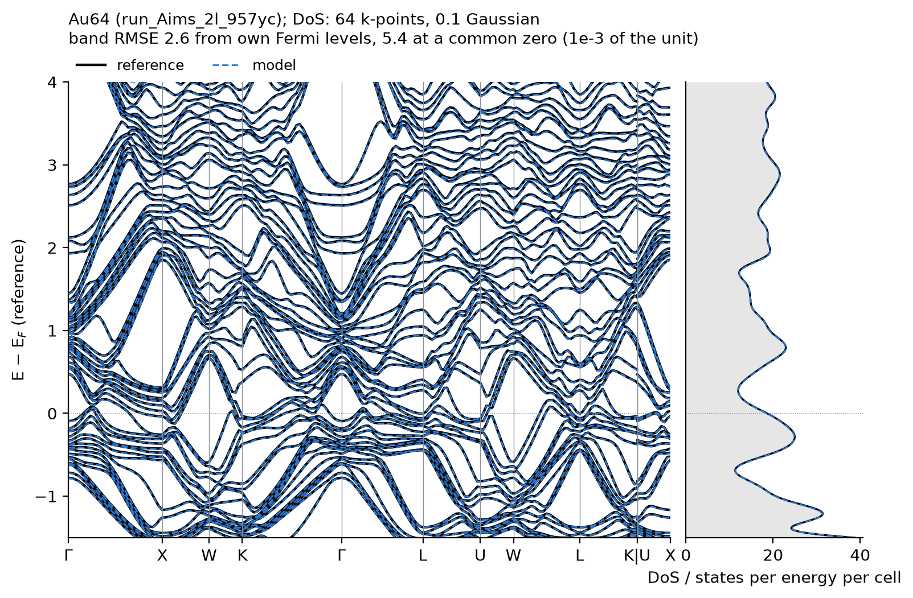
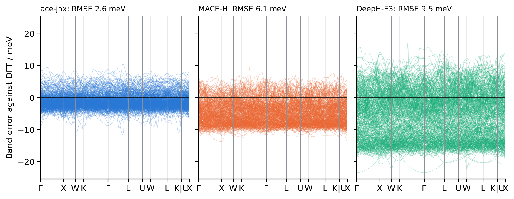

Hamiltonian models¶
A Hamiltonian model predicts the Hamiltonian matrix H and the overlap matrix S of a structure in a basis of atomic orbitals. The bands, the density of states and the band energy come from these matrices without a self-consistent calculation.
ace-jax fits the model to the matrices of DFT calculations. The fit is a linear least-squares problem. It has no training loop and needs only a few structures.
Warning
Hamiltonian models are new. The command names, the options and the model file can change in the next releases.
Enable float64 in Python
Fitting and radial learning need float64. The aj command enables
float64 itself. In Python, enable float64 before any other code imports
JAX:
Alternatively, set JAX_ENABLE_X64=1 in the environment. ace-jax never
changes the JAX precision setting itself. The JAX default is float32.
Install¶
- Add
hamto the extras that you install:pip install "ace-jax[ham]".
The ham extra installs h5py, which reads and writes the DeepH file layout.
The data¶
The training data is a set of structures with blocks. A block is the part of H or S that connects the orbitals of one atom with the orbitals of a second atom. An on-site block connects an atom with itself. An off-site block connects two different atoms, or an atom and its periodic image.
aj ham reads a directory that contains one of these:
- subdirectories in the DeepH layout, one for each structure
(
hamiltonians.h5,overlaps.h5and the structure files); - operator cache files (
*.npz), one for each structure, written byace_jax.ham.cache.save.
All structures of a dataset must have the same orbital basis. For FHI-aims output, Quoll.jl writes the DeepH layout.
A DeepH subdirectory with up and dn inside is a collinear-spin structure.
Its channels are H_up, H_dn and S.
Fit a model¶
- Put the training structures in one directory and the validation set in a second directory.
- Run the fit.
- Read the errors on the validation set.
The command prints the training residual, then the errors of the model on the validation set, and writes the model file. The model file contains the basis, the coefficients and a record of the fit.
--nelectrons gives the number of electrons that the bands contain. Give one
number for the cell, or Z:n pairs for the electrons of each atom of each
element. The default is the atomic number, which is correct for an
all-electron basis.
The model file records the --nelectrons of the fit. aj eval,
aj ham predict and aj ham bands use this value if you do not give the
option.
The basis¶
The default basis is accurate for a metal with s, p and d orbitals. Change it with these options:
| Option | Meaning |
|---|---|
--site-rcut, --site-radials |
cutoff and number of radial functions of the environment of each atom |
--bond-radials |
number of radial functions of the distance between the two atoms of a block |
--bond-rcut |
longest distance that has a block. The default is the longest distance in the data |
--coupled N L |
features that couple the bond with the environments of its two atoms |
--env R N L NB LB |
features of the atoms near the bond. This group gives most of the accuracy and most of the cost |
--no-env |
no features of the atoms near the bond. The model is fast and less accurate |
The prior¶
--prior sets a smoothness prior on the coefficients.
none(the default) fits with no prior. Use it when the data is from one material and the structures are similar.evidenceselects the prior scale by the Bayesian evidence. Use it for datasets with many elements.looselects the prior scale by leaving one structure out at a time. On a dataset with four elements it did not remove the problem in the warning below, and its fit used much more time and disk space.- A number sets the scale directly.
Warning
A fit with no prior can give an eigenvalue far from the bands when the
overlap matrix is almost singular. The block errors do not show this
problem. If the validation set shows a structure with a large band error,
fit again with --prior evidence.
Read the errors¶
aj ham fit --validation and aj eval --model gold.npz --data validation/
print the same tables.
- Blocks: the error of the matrix elements, for the on-site and the off-site blocks of each channel.
- Bands at a common zero: the eigenvalue error with the two spectra as they are.
- Bands from own Fermi levels: the eigenvalue error after each spectrum is moved to its own Fermi level. Most publications give this number.
- Fermi level and band energy for each atom: the errors of these two quantities.
- Density of states: the Wasserstein distance between the two densities of states. It is the mean distance that the states must move.
The eigenvalue errors include the states from --window LO HI relative to the
reference Fermi level. The summary names each structure with a band error
larger than 5 times the median.
Energies are in the unit of the data. For FHI-aims data the unit is eV, and the tables show meV.
Predict H and S¶
- Give the model file and the structures: an extxyz file, or a directory of structures with blocks.
The command writes one subdirectory in the DeepH layout for each structure,
with hamiltonians_pred.h5 and overlaps_pred.h5.
Bands and density of states¶
- Give the model file and one structure.
The command calculates the bands on the high-symmetry path of the cell and the
density of states on the --kpts grid. --path sets a different path, for
example GXMG.
If the structure has blocks, the command also calculates the bands of the
reference and prints the errors of the model. The figure then shows the two
sets of bands together. --plot needs matplotlib.
Example: bulk gold¶
This example uses the bulk gold dataset of the MACE-H publication (Zenodo 10.5281/zenodo.15223696). The dataset has 64-atom cells from FHI-aims with 9 orbitals for each atom, in the DeepH layout. The fit uses 32 training structures. The validation set is the 10 test structures of the dataset.
-
Fit the model with the default basis.
-
Draw the bands and the density of states of one test structure.
The fit takes approximately 70 seconds on one GPU. On the validation set the band error from own Fermi levels is 2.1 meV, and the off-site blocks of H have a mean absolute error of 0.28 meV.

The figure shows the bands of the model on the bands of the DFT reference. The cell has 64 atoms, thus the bands are folded. Below −1.5 eV the d bands are too dense for a figure of this size. The density of states and the errors that the command prints include these bands.
Comparison with MACE-H and DeepH-E3¶
The table compares ace-jax with MACE-H and DeepH-E3. Each code used the same 32 training structures, and the same program calculated the errors on the same 10 test structures. The two networks have the configuration that the MACE-H authors published for this dataset. Their training was on one A100 GPU.
| Model | H error (MAE) | Band error (RMSE, own Fermi levels) | Prediction on one CPU core | Prediction on a GPU | Fit or training time |
|---|---|---|---|---|---|
| ace-jax, default basis | 0.29 meV | 2.1 meV | 14 ms for each atom | 0.6 ms for each atom | 70 s |
| ace-jax, largest basis of the benchmark | 0.13 meV | 1.3 meV | 18 ms | 0.6 ms | approximately 7 minutes |
| MACE-H | 0.38 meV | 5.3 meV | 258 ms | 3.5 ms | more than 14 hours |
| DeepH-E3 | 0.47 meV | 8.4 meV | 264 ms | 3.6 ms | 12.5 hours |
The prediction times are for the blocks of H only. They do not include the calculation of the eigenvalues. The CPU is one core of a Xeon Gold 6130. The GPU is an RTX 4000 Ada in float32. ace-jax on the CPU is in float64.
Note
The MACE-H training with 32 structures stopped at its time limit of 14 hours. The table shows its best model at that time. With 16 structures its training was complete, and its band error was 6.1 meV. A MACE-H network of half the size, with 32 structures and complete training, has a band error of 4.6 meV and a prediction time of 126 ms for each atom on one CPU core.
The next figure shows the error of each band on the path, for the test structure of the first figure.

For each code, the mean of the errors is not zero. This is a shift of all the eigenvalues of a structure together, through the error of the Fermi level. The shift is different for each structure. It does not change the shape of the bands, but it changes the band energy.
Use the model from Python¶
HamiltonianCalculator is an ASE calculator.
import jax
jax.config.update("jax_enable_x64", True)
from ace_jax.ham.calculator import HamiltonianCalculator
calc = HamiltonianCalculator("gold.npz", kpts=(4, 4, 4), nelectrons={79: 11}, width=0.1)
atoms.calc = calc
atoms.get_forces()
calc.get_eigenvalues(kpt=0)
calc.get_fermi_level()
H = calc.get_hamiltonian(atoms) # {(Rx, Ry, Rz, i, j): block}
calc.write_results("predicted") # DeepH layout
Warning
The energy of this calculator is the band energy. It is not a total energy: it has no repulsive term. The forces and the stress are the derivatives of the band free energy only.
threads= sets the number of CPU threads for the off-site blocks.